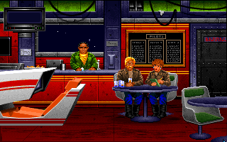
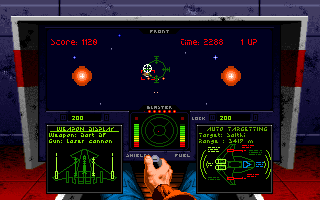
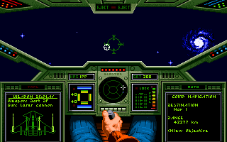

名稱：銀河飛將1 (Wing Commander，英文版)
簡介：Origin 1990年出品的太空飛行戰鬥模擬遊戲，同年推出資料片「秘密任務（Secret
Missions）」，1991年再推出「秘密任務2（Secret Missions 2）」資料片，台灣由
智冠代理進口 [待補]。



備註：本版為豪華版，要玩主程式請執行PLAY.BAT，要玩秘密任務2請執行PLAY2.BAT。
保護：數字密碼，破解碼：
WC.EXE, SM2.EXE
E8 81 FE 59 0B C0 75 14
90 90 90 -- -- -- EB --
或
SM2.EXE
CC 27 00 75
-- -- -- EB
備註：1991年的豪華版（Deluxe Edition）為將主程式和兩個資料片的磁片綑綁在一起銷售
（主程式與資料片均為F3.1版）。
備註：光碟版安裝內容和磁片版豪華版相同。
備註：電腦速度不可太快，否則難以操控。
檔案：wc1-old.rar = 1990年磁片版32.3版+2個秘密任務資料片（智冠版）